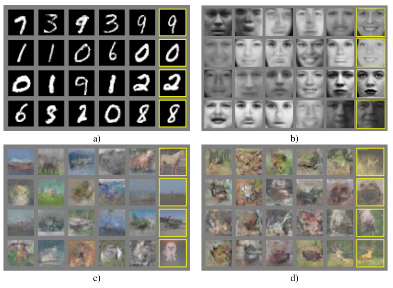

The GAN paper credited with deepfakes generated blurry thumbnails
Ian Goodfellow's 2014 paper invented adversarial training, then judged its blurry samples with a metric its own authors distrusted.
Why this matters
Almost every image generator you have heard of, from the app that ages your selfie to the tools that invent faces of people who do not exist, gets traced back to one paper from 2014. This lesson opens that paper. You will see what it built, what it actually generated, how those results were judged, and where the reputation it now carries runs ahead of the evidence it put on the page. The invention inside it is real and it lasted. The sharp, photoreal images most people picture when they hear its name are not in it.
- 01
- How a network reads an image: how a neural network takes in a picture and turns it into a judgment, which is the discriminator's whole job in this paper.
- 02
- Word embeddings: how a model represents data as points in a continuous space of numbers, the kind of space the generator draws its input from.
What the citation count points at
“Generative Adversarial Nets” is a 2014 paper by Ian Goodfellow and seven coauthors at the University of Montreal.1 Google Scholar puts it at roughly 97,000 citations, read on 6 August 2026, an order-of-magnitude marker of fame rather than an exact count.2 That is among the largest citation totals in machine learning, the kind of number usually attached to a field's founding documents. The paper ran nine pages in the proceedings of the NIPS 2014 conference.3 It is short. The reputation is not. The machine-made image era points back to a proof-of-concept that fits in those nine pages.1
The invention that genuinely holds up
Start with what the paper got right, because it is a real idea and it lasted. Before 2014, getting a computer to produce a new image meant wrestling with probability models that were slow to draw samples from and hard to train. Goodfellow's paper replaced that with a contest between two networks.1 One network, the generator, takes a string of random numbers and turns it into an image. The second, the discriminator, looks at an image and estimates one thing: whether it is a real example from the training data or a fake from the generator. The two train together. The discriminator learns to catch fakes; the generator learns to make fakes the discriminator cannot catch. Push that contest far enough and, in principle, the generator produces images the discriminator can no longer tell from real ones.1
The elegant part is what the scheme does without. It needs no Markov chains and no separate inference network, both of which earlier generative models relied on to draw a sample. Both halves are ordinary neural networks trained by the standard method, backpropagation.1 That simplicity is why the idea spread. Adversarial training, a generator improving by trying to fool a critic, is the part of this paper that held up, and later work carried it a long way.
A proof the real networks cannot honor
The paper does not just describe the contest. It proves the contest has a clean solution. Written out, the training objective is a two-player game: the discriminator tries to be right as often as possible, the generator tries to make it wrong.1 The paper's central theorem says this game has a single best outcome, and it is exactly the one you would want. The generator wins when the images it produces follow the same distribution as the real data, matching it everywhere. At that point the discriminator is reduced to a coin flip, outputting one-half for every image because real and fake have become genuinely indistinguishable, and the objective settles at the value minus log four, about minus 1.386.1
The proof holds under one assumption the paper states plainly. It is carried out in “the space of probability density functions,” a setting with infinite capacity where a network can represent any distribution at all.1 Real generators are not that. They are finite networks with a fixed number of adjustable weights, and the paper concedes the point directly: using a neural network to define the generator “introduces multiple critical points,” and the method is left with “no theoretical guarantees.”1 In practice the training is touchy. The paper names one failure mode itself, the “Helvetica scenario,” in which the generator collapses many different random inputs onto the same output and stops producing variety, the opposite of what it was supposed to learn.1 The clean proof and the collapse describe the same method. Only one of them assumes infinite room.
The evidence the paper printed
Set the theory aside and look at what the paper generated. It trained the generator on three sets of images. MNIST is a standard collection of handwritten digits. The Toronto Face Database holds small grayscale photographs of faces. CIFAR-10 is sixty thousand color photographs of objects and animals, each thirty-two by thirty-two pixels.14 Thirty-two by thirty-two is about a thousand pixels, smaller than one app icon on a phone home screen. The samples were small because the training images were small.

The digits in panel (a) are legible. The faces in panel (b) are gray and soft, closer to a smudged memory of a face than a photograph. The color images in panels (c) and (d) are blurred patches in which you can just make out a horse, a bird, a green field.1 The panel of faces is the one to pause on, because it is the closest thing in the paper to the “faces of people who do not exist” the technique later became known for. These are blurry reconstructions in the manner of a real face database, not sharp invented identities.
How were these judged? Two ways, and neither is what a modern benchmark would use. The first was looking at the panels above. The second was a single number per dataset, a Gaussian Parzen-window log-likelihood estimate, a score for how probable the real test images look under the spread of the generator's samples.1 The paper is unusually candid about how much weight that number can bear.
This method of estimating the likelihood has somewhat high variance and does not perform well in high dimensional spaces but it is the best method available to our knowledge.1 Goodfellow et al., Section 5
The paper's own numerical results are two scores, one on MNIST and one on the Toronto Face Database, set against three earlier methods in a single small table.1
| Model | MNIST | TFD |
|---|---|---|
| DBN | 138 ± 2 | 1909 ± 66 |
| Stacked CAE | 121 ± 1.6 | 2110 ± 50 |
| Deep GSN | 214 ± 1.1 | 1890 ± 29 |
| Adversarial nets | 225 ± 2 | 2057 ± 26 |
On MNIST the adversarial model came first. On the Toronto Face Database it came second, behind Stacked CAE.1 CIFAR-10, the blurriest of the three, received no score at all; it was shown only as pictures. A method now credited with a revolution in image generation was introduced with a first place on digits, a second place on faces, and a metric its own authors distrusted.
The photoreal faces that came later
So where did the photoreal faces come from? They are real, and they do descend from this paper, just not from anything printed in it. The line runs through other labs and later years. In 2015, DCGAN gave adversarial training a stable convolutional design, the first version that trained reliably on images.5 In 2017, Progressive Growing of GANs reached face images of 1024 by 1024 pixels, a full megapixel.6 In 2018 and 2019, StyleGAN produced the sharp, invented human faces that circulated online as people who do not exist.7 A megapixel face has about a thousand times the pixels of a CIFAR sample, and it arrived three to five years after the 2014 paper, from Karras and colleagues at NVIDIA.6 The 2014 paper is the correct origin of the technique. It is not the origin of the images people picture.
The reputation gets a second thing wrong, in the other direction. The GAN line did not stay on top. By 2020, denoising diffusion models, a different approach that builds an image by removing noise a step at a time, matched the best GANs on standard tests.8 A 2021 paper said so in its title, “Diffusion Models Beat GANs on Image Synthesis,” and reported a standard image-quality score of 2.97 on ImageNet at 128 pixels, where lower is better, beating BigGAN-deep, the strongest GAN of the day.9 The leading image generators today are diffusion models, not GANs. The idea from 2014 held up as an idea. As the reigning way to make images, it has already been replaced.
The takeaway
The reputation and the paper can now sit in the same frame. “Generative Adversarial Nets” introduced adversarial training, one generator improving by trying to fool one critic, and that idea was strong enough to launch a decade of work. What the paper itself generated was small: legible handwritten digits, soft gray faces, and thirty-two-pixel color blobs you can just resolve into a horse or a bird. It judged them by eye and by one number per dataset, drawn from a metric its own authors called high-variance and poor in high dimensions, and on faces that metric did not even rank the new method first. The photoreal faces came three to five years later, from other labs, and the tools leading image generation today are diffusion models, not GANs. If someone tells you this paper made deepfakes, the accurate version is narrower: it made the training idea that, several inventions later, made them possible, and it proved that idea worked using pictures you would now mistake for thumbnails.
- 01
- Ferenc Huszár, “How to Train your Generative Models?”: why adversarial training works better than the obvious alternatives, and where its guarantees stop.
- 02
- Melanie Mitchell, “Magical Thinking on AI”: how to check a confident public claim about AI against the technical document underneath it.
Sources
- arXiv · Ian J. Goodfellow et al., “Generative Adversarial Nets” (2014)
- Google Scholar · Citation record for “Generative Adversarial Nets”
- dblp · “Generative Adversarial Nets,” NIPS 2014, pp. 2672–2680
- Alex Krizhevsky · The CIFAR-10 dataset
- arXiv · Radford, Metz & Chintala, “Unsupervised Representation Learning with Deep Convolutional GANs” (2015)
- arXiv · Karras et al., “Progressive Growing of GANs for Improved Quality, Stability, and Variation” (2017)
- arXiv · Karras, Laine & Aila, “A Style-Based Generator Architecture for GANs” (2018)
- arXiv · Ho, Jain & Abbeel, “Denoising Diffusion Probabilistic Models” (2020)
- arXiv · Dhariwal & Nichol, “Diffusion Models Beat GANs on Image Synthesis” (2021)